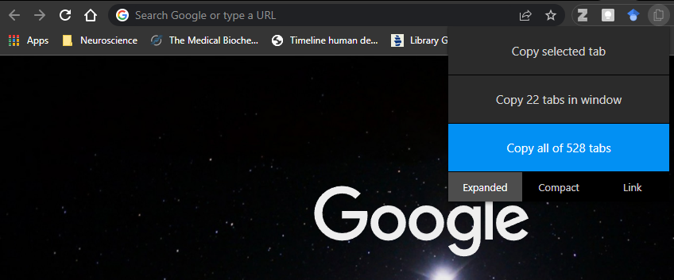
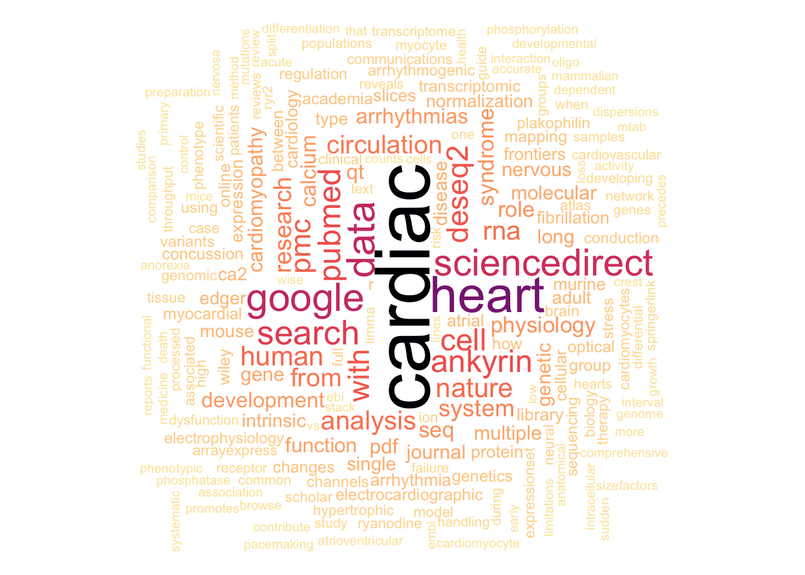

Got 528 tab problems
but defeat ain’t one.

How many times have you said to yourself: “I’ll leave this X number of tabs open for now and will check them later to complete (insert task)?
The revolutionary introduction of tabs to browsers initiated by “InternetWorks” (developed by BookLink Technologies) and popularized by Mozilla Firefox has allowed users to open as many tabs as they want within a single browser window, limited only by the user’s RAM and tolerability to unreadable (and often unclickable) tabs on the browser title bar. This, combined with the increasingly available RAM in computers (my main desktop rig harbours 32 GB, for example) and the expandability of desktops within the same operating system session can quickly create a disaster of open tabs if one doesn’t pay attention to this matter.
As shown in the image above, I’ve fallen into the bottomless pit of multiple browsers, with multiple tabs across multiple desktop instances. The result: 528 open tabs. Yes, 528 tabs. Open. All the time. Using Google Chrome.

This also means I haven’t shutdown my computer in a while and even when I did (due to priority security updates for Windows), I immediately restored my browser windows and every single one of those 528 tabs.
But why? What is the reason underlying this chaos!?
Without diving deep into the melting pot inside my head, such chaos is simply the result of disorganization. More specifically, disorganized thoughts and ideas. These 528 tabs represent 528 thoughts and ideas that were not written down, categorized, and interconnected in a timely and structured fashion (I won’t go over the reasons behind this, but let’s say it’s been busy times at Juan’s camp).
In other words, I was using multiple tabs as a form of personal knowledge management system and -damn- it was an awful, terrible idea.
Personal knowledge management? A Personal Knowledgement Management (PKM) is a process of colelcting information in a structured manner so it is retrievable, shareable, and escalable. In simpler terms, a system that can be used as your second brain. I will talk more about this in a separate post.
I found a PKM that meets my needs and sort of behaves like a brain. Plus, it checks some of my favourite things: markdown-based, local first, and FOSS. This PKM is called dendron
It is #TidyTuesday after all, so let’s explore what were the most common words present in those open tabs.
Packages to use
library(readr)
library(dplyr)
library(tidyr)
library(stringr)
library(tidytext)
library(wordcloud)Loading data
I’ve been using TabCopy for most of my Chrome experience. It’s a pretty useful extension that lets users copy the tabs that are open on a browser window (and even across multiple browsers windows), which can be easily pasted and save in a text file for later use. I copied the tabs using the TabCopy “Extended Format”, where it generates a line with the name of the tab/website (i.e., the “title”) followed by the URL.
tabs <- read_csv("data/urls_2022-03-31.txt", col_names = FALSE)
tail(tabs)# A tibble: 6 × 1
X1
<chr>
1 Fig. 1: Cell composition of the adult human heart. | Nature
2 https://www.nature.com/articles/s41586-020-2797-4/figures/1
3 Quantitative cross-species translators of cardiac myocyte electrophysiology: …
4 https://www.science.org/doi/10.1126/sciadv.abg0927?url_ver=Z39.88-2003&rfr_id…
5 Bioconductor - RCy3
6 https://bioconductor.org/packages/release/bioc/html/RCy3.html Tidying data
The above output shows that each website’s name is in odd rows with and URL’s in even rows. Because I like data frames, I want to have a column (variable) with each website title and another column with its respective URL. An easy way to do this is by creating dummies indexes to create a tidy dataframe.
seq(1, nrow(tabs),2) -> odd_indexes
seq(2, nrow(tabs),2) -> even_indexes
tabs_df <- data.frame(tabs[odd_indexes,], tabs[even_indexes,])
colnames(tabs_df) <- c("url_title", "url")
knitr::kable(tail(tabs_df))| url_title | url | |
|---|---|---|
| 366 | SINGLE-LETTER AMINO ACID CODE | http://130.88.97.239/bioactivity/aacodefrm.html |
| 367 | The developmental transcriptome of the human heart | Scientific Reports | https://www.nature.com/articles/s41598-018-33837-6#Sec10 |
| 368 | The Transitional Heart: From Early Embryonic and Fetal Development to Neonatal Life - FullText - Fetal Diagnosis and Therapy 2020, Vol. 47, No. 5 - Karger Publishers | https://www.karger.com/Article/Fulltext/501906 |
| 369 | Fig. 1: Cell composition of the adult human heart. | Nature | https://www.nature.com/articles/s41586-020-2797-4/figures/1 |
| 370 | Quantitative cross-species translators of cardiac myocyte electrophysiology: Model training, experimental validation, and applications | https://www.science.org/doi/10.1126/sciadv.abg0927?url_ver=Z39.88-2003&rfr_id=ori:rid:crossref.org&rfr_dat=cr_pub%20%200pubmed |
| 371 | Bioconductor - RCy3 | https://bioconductor.org/packages/release/bioc/html/RCy3.html |
Wordcloud
Now that we have a tidy data frame (tabs_df), let’s create a wordcloud with the help of tidytext and wordcloud packages and see what I have been reading heavily lately on the web.
text_df <- tibble(line = 1:371, text = tabs_df$url_title)
text_df %>% unnest_tokens(word, text) -> text_unnested
text_unnested %>% filter(!word %in% c(
"the", "and", "of", "in", "a",
"to", "for", "1", "2", "at", "is",
"are", "as", "b", "an", "on",
"i", "by", "e", "it", "its", "etc"
)) %>% count(word, sort = TRUE) -> text_unnested.filtered
wordcloud(words = text_unnested.filtered$word,
freq = text_unnested.filtered$n,
min.freq = 1, max.words = 200,
random.order = FALSE, rot.per = 0.35,
colors = rev(viridis::magma(n = 131100)))